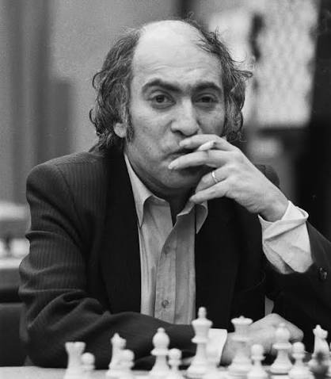
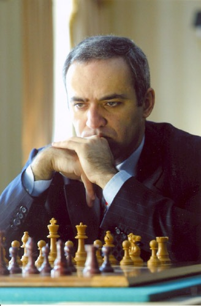
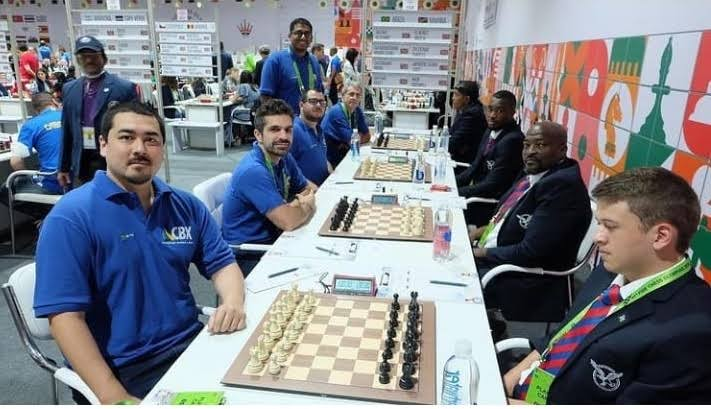

Rei
vale: o jogo todoAnda uma casa em qualquer direção. Se ele cai, o jogo acaba.
Meu hobby favorito
Jogo xadrez porque cada partida é um problema novo para resolver. Toque numa peça do tabuleiro ao lado e veja como ela se move.
Nenhuma peça selecionada.
Anda uma casa em qualquer direção. Se ele cai, o jogo acaba.
A peça mais forte: anda quantas casas quiser em linha reta ou na diagonal.
Anda em linha reta, na horizontal ou na vertical.
Anda na diagonal e fica sempre na mesma cor de casa.
Anda em "L" e é a única peça que pula as outras.
Anda para frente, captura na diagonal e pode virar qualquer peça ao chegar ao fim do tabuleiro.
O rei anda duas casas em direção a uma torre, e a torre pula para o outro lado dele. Só vale se nenhum dos dois se mexeu antes e o rei não passa por casas atacadas.
Se um peão avança duas casas e para ao lado de um peão inimigo, esse inimigo pode capturá-lo "de passagem" — mas só no lance seguinte.
Peão que chega à última linha troca de peça na hora: dama, torre, bispo ou cavalo. Quase todo mundo escolhe a dama.
Xeque é quando o rei está sendo atacado. Xeque-mate é quando ele não tem como escapar: fim de jogo.
Se o jogador da vez não tem nenhum lance legal e o rei não está em xeque, a partida termina empatada.
Mesma posição três vezes, 50 lances sem captura nem movimento de peão, ou falta de peças para dar mate.
Um tabuleiro, dois jogadores, o mesmo aparelho. Quando eu e meu amigo estamos juntos, a gente joga por aqui e passa o celular (ou o computador) de mão em mão. O site já confere as regras, avisa o xeque e guarda o placar.
Vez das brancas.
Você joga de brancas e tem um único lance para dar xeque-mate. Toque na peça e depois na casa de destino. Qualquer xeque-mate vale!
Abra uma abertura e aperte ▶ para ver as jogadas acontecendo no tabuleiro, com a explicação de cada lance. Você também pode voltar, avançar ou tocar nos lances da lista.
1.e4 e5 2.Cf3 Cc6 3.Bc4. As brancas desenvolvem rápido e miram o ponto fraco f7. Boa para quem está começando.
1.e4 c5. As pretas jogam por uma posição desequilibrada e lutam pela vitória desde o começo.
1.d4 d5 2.c4. As brancas oferecem um peão para ganhar controle do centro.
1.e4 e5 2.Cf3 Cc6 3.Bb5. O bispo pressiona o cavalo que defende o peão de e5. É uma das aberturas mais estudadas da história.
1.e4 e6 2.d4 d5. As pretas montam uma posição sólida, com os peões bem protegidos, e esperam o momento certo para contra-atacar.
1.e4 c6 2.d4 d5. Parecida com a Francesa, mas deixa o bispo de casas claras livre. Muito confiável.
1.e4 e5 2.Dh5 Cc6 3.Bc4 Cf6?? 4.Dxf7#
Mate em 4 lances mirando f7. Quem conhece essa armadilha nunca mais cai nela. Dá para treinar no desafio 2 lá em cima!
1.f3 e5 2.g4 Dh4#
O mate mais rápido possível: só 2 lances. Acontece quando as brancas abrem o rei sem querer.
Três campeões que me fizeram gostar ainda mais do jogo. Cada um joga de um jeito diferente, e é isso que torna o xadrez tão interessante.

Coloque a foto emimages/tal.jpg
O "Mago de Riga". Foi campeão mundial em 1960, aos 23 anos, e ficou famoso por sacrifícios ousados que deixavam o adversário sem saber o que fazer.
Por que eu gosto: ele jogava para criar confusão e surpreender.

Coloque a foto emimages/kasparov.jpg
Campeão mundial de 1985 a 2000, um dos maiores de todos os tempos. Em 1997 enfrentou o computador Deep Blue numa partida que entrou para a história.
Por que eu gosto: a energia e o quanto ele estudava as aberturas.
images/fischer.jpg
Aos 13 anos jogou a "Partida do Século" e, em 1972, venceu o soviético Boris Spassky no Mundial disputado em Reykjavik, na Islândia.
Por que eu gosto: a disciplina e a busca pelo lance perfeito.
A disputa pelo título mais importante: o campeão defende a coroa contra o desafiante. Cada lance é analisado no mundo todo.
Os melhores jogadores do planeta lutam para decidir quem enfrenta o campeão mundial.
Seleções de vários países jogam em equipe, a cada dois anos. É bonito ver o xadrez como esporte coletivo.
Partidas de poucos minutos, cheias de erros e reviravoltas. É o ritmo que eu mais gosto de assistir e de jogar.

Coloque a foto emimages/torneio.jpg
Tirar as peças de casa e lutar pelo centro.
Fazer planos, atacar e trocar peças.
Poucas peças: o rei vira peça de ataque e os peões viram dama.
O xadrez nasceu na Índia há mais de 1.500 anos, num jogo chamado chaturanga.
Em 1997, o computador Deep Blue venceu o campeão mundial Garry Kasparov numa partida oficial.
Existem mais partidas possíveis de xadrez do que átomos no universo observável. Sem exagero!
As colunas são letras (a–h) e as linhas são números (1–8). Por isso "e4" é sempre a mesma casa, em qualquer lugar do mundo.
No xadrez relâmpago (blitz) cada jogador tem poucos minutos para a partida inteira. Dá para testar no relógio da seção Jogar.
A dama já foi uma peça fraca, que andava só uma casa na diagonal. Hoje ela é a mais poderosa do tabuleiro.
Em teoria, um jogador pode ter até 9 damas ao mesmo tempo: a original e mais 8 peões promovidos.
As brancas sempre começam, e por isso têm uma pequena vantagem estatística.
O brasileiro Henrique Mecking, o Mequinho, foi o primeiro grande mestre do Brasil, em 1972.

Oi, eu sou o Nathan! Sou estudante de computação e o xadrez é o meu hobby favorito. Gosto dele porque lembra programação: dá para quebrar um problema grande em pequenas decisões e testar ideias antes de agir.
Jogo online e com amigos, gosto de resolver mates e estou sempre aprendendo aberturas novas. Este site reúne tudo o que eu curto no jogo.